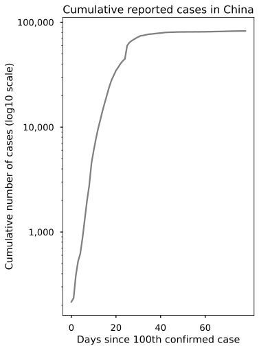
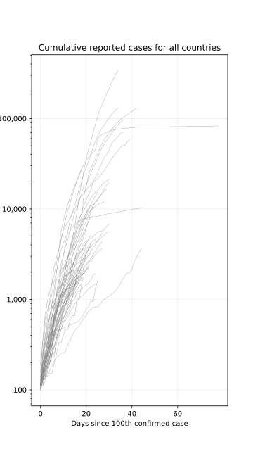
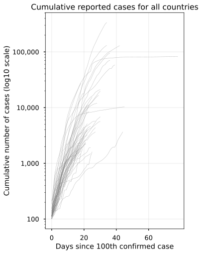

I love R. I wouldn’t be where I am in my career without the tools of the Tidyverse and kindness of the Rstats and Rladies communities. It provided me a platform to entering data science, exposing me to the world of software engineering and development along the way. Choosing to use R over Stata for my Economics Honours thesis was probably the best choice I made (hides behind shield).
I picked up new programming languages over the past two years working as a data scientist. The choice of programming languages at work are determined by the design of the tech stack and the analytics teams. We mostly use PySpark at work for exploratory data analysis (EDA) and “feature engineering”. So far, I’ve managed. I picked up standard python libraries like Pandas and NumPy, machine learning libaries (MLlib) in Pyspark, and wrangled many tables in SQL.
But the one thing I couldn’t put myself through is learning how to plot in Python. I couldn’t get over the ease and beauty of building visualisations using ggplot2. I would do all my work in SQL and pyspark, but I would always finish off my EDA using ggplot.
Getting over the curve
I’ve been finally pushing myself to get acquainted with Python plotting libraries. I figured that it wouldn’t hurt being bilingual in the two main data science languages. Plus all the developers at work are all python useres (pythonistas?), so it would be jointly beneficial to communicate using the programming lingua franca.
I found it difficult navigating the vast array of packages Python has for plotting. Matplotlib, seaborn, altair, bokeh, etc. But I realised that most of the higher level modules are built on top of matplotlib. So while you may plot using a higher level package like seaborn, a lot of the tweaking is done using matplotlib functions.
Learning matplotlib is difficult. The first thing which took me a while to wrap my head around was how I needed the data to be structured to build the plots I wanted. Matplotlib requires data in a wide format, as opposed to a long (tidy) format when reading in components of the data. Seaborn was much easier to grasp as it requires long/tidy data structures when plotting. This feels more intuitive to me as a ggplot user.
Replicating KH’s COVID Small Multiples in Matplotlib
I came across Kieran Healy’s blog post a couple of weeks ago where he plotted cumulative reported cases of the COVID-19 virus for the top 50 countries. I thought it would be a good exercise for me to try to replicate this in Matplotlib.
I’ve always admired this style of visualisation It preserves the variation of all the countries while highlighting the key country you want to focus on for comparison and trend analysis. I use similar plots at work all the time to assist in presentations - a clean and compact way of presenting rich datasets.
I saved myself the effort of recreating the dataset from scratch by using Kieran’s R code found in his COVID Github Repository. The COVID data comes from the European Centre for Disease Prevention and Control (ECDC). Note that I have not checked the validity or accuracy of the data source or scraping process. This is just an exercise in creating a similar figure in Python.
Processing the data
Most of the data preprocessing has been completed in the R script. However, there is still a bit of work requierd to get the necessary datasets and objects prepared for plotting. The exact data and scripts I used here
First, load in the data, libraries and clean up some of the country labels.
import pandas as pdimport numpy as npimport matplotlib as mplimport matplotlib.pyplot as pltimport matplotlib.ticker as tick# Setting some Matplotlib parametersmpl.rcParams['figure.dpi']=300# plt.style.use('seaborn-talk')# Replace the some of the country names with shorter labelsdata = pd.read_csv('cov_case_curve2.csv')\ .replace({'cname' : {'United States' : 'USA','Iran, Islamic Republic of' : 'Iran','Korea, Republic of' : 'South Korea', 'United Kingdom' : 'UK'}})\ .drop('Unnamed: 0', axis=1)# Show first 5 rows of the main datasetdata.sort_values("date", ascending =False)\ .head()\ .style
date
cname
iso3
cases
deaths
cu_cases
cu_deaths
days_elapsed
end_label
2205
2020-04-06
Viet Nam
VNM
1
0
241
0
14
Viet Nam
2146
2020-04-06
Jordan
JOR
22
0
345
5
13
Jordan
2118
2020-04-06
Denmark
DNK
292
18
4369
179
27
Denmark
2119
2020-04-06
Dominican Republic
DOM
167
5
1745
82
15
Dominican Republic
2120
2020-04-06
Ecuador
ECU
181
8
3646
180
19
Ecuador
Next, we subset our data so it contains the top 50 cumulative cases as of April 6th (df_50) and pivot them into a ‘wide’ format. The index of the dataframes will be the days_elapsed variable (x-axis) and the columns will contain cumulative cases for each country (y-axis, presented on log10 scale).
For ggplot and seaborn, these country columns would be their own variable to determine the facets of the plot. This makes creating the grid of a facet plot much simpler (one line of code).
## Countries - top 50 cumulative cases as of 2020-03-27## We will use this to create a dataset with only the top 50 countries## that we will highlight in all the subplotstop_50 = data.loc[data.groupby(["cname"])["cu_cases"].idxmax()]\ .sort_values('cu_cases', ascending =False)\ .head(50)\ .loc[:, ['iso3', 'cname', 'cu_cases']]## Filter countries in top 50_df = data.loc[data['iso3'].isin(top_50['iso3'])]\## Restructure data into wide format## Top 50df_50 = _df.pivot(index ='days_elapsed', values ='cu_cases', columns ='cname')\ .reset_index(inplace=False)# Days elapsed as index (x axis)df_50.index = df_50['days_elapsed']# Drop unwanted columns#df = df.drop('days_elapsed', axis = 1)df_50 = df_50.drop('days_elapsed', axis =1)# Display one of the dataframesdf_50.head().style
cname
Algeria
Argentina
Australia
Austria
Belgium
Brazil
Canada
Chile
China
Colombia
Czech Republic
Denmark
Dominican Republic
Ecuador
Finland
France
Germany
Iceland
India
Indonesia
Iran
Ireland
Israel
Italy
Japan
Luxembourg
Malaysia
Mexico
Netherlands
Norway
Pakistan
Panama
Peru
Philippines
Poland
Portugal
Qatar
Romania
Russian Federation
Saudi Arabia
Serbia
South Africa
South Korea
Spain
Sweden
Switzerland
Thailand
Turkey
USA
United Arab Emirates
days_elapsed
0
102.000000
128.000000
100.000000
102.000000
109.000000
121.000000
103.000000
156.000000
216.000000
102.000000
116.000000
113.000000
112.000000
111.000000
155.000000
100.000000
111.000000
117.000000
125.000000
117.000000
139.000000
129.000000
116.000000
132.000000
105.000000
140.000000
117.000000
118.000000
128.000000
113.000000
187.000000
109.000000
117.000000
111.000000
104.000000
112.000000
262.000000
113.000000
114.000000
118.000000
126.000000
116.000000
155.000000
114.000000
137.000000
209.000000
114.000000
191.000000
103.000000
113.000000
1
189.000000
158.000000
112.000000
131.000000
169.000000
200.000000
138.000000
201.000000
235.000000
128.000000
150.000000
264.000000
202.000000
168.000000
nan
130.000000
129.000000
117.000000
137.000000
134.000000
245.000000
169.000000
178.000000
229.000000
132.000000
210.000000
129.000000
164.000000
188.000000
147.000000
187.000000
137.000000
145.000000
140.000000
125.000000
169.000000
nan
139.000000
147.000000
133.000000
135.000000
150.000000
345.000000
151.000000
161.000000
264.000000
177.000000
359.000000
125.000000
113.000000
2
231.000000
225.000000
126.000000
182.000000
200.000000
234.000000
176.000000
238.000000
386.000000
158.000000
214.000000
516.000000
245.000000
199.000000
210.000000
178.000000
157.000000
138.000000
165.000000
172.000000
388.000000
223.000000
250.000000
322.000000
144.000000
345.000000
149.000000
203.000000
265.000000
169.000000
302.000000
200.000000
234.000000
142.000000
177.000000
245.000000
320.000000
184.000000
199.000000
133.000000
149.000000
205.000000
601.000000
200.000000
203.000000
332.000000
177.000000
670.000000
159.000000
140.000000
3
264.000000
266.000000
156.000000
246.000000
239.000000
291.000000
244.000000
342.000000
526.000000
210.000000
298.000000
676.000000
312.000000
426.000000
267.000000
212.000000
196.000000
178.000000
191.000000
172.000000
593.000000
292.000000
260.000000
400.000000
144.000000
484.000000
158.000000
251.000000
321.000000
192.000000
478.000000
245.000000
263.000000
187.000000
238.000000
331.000000
337.000000
217.000000
253.000000
171.000000
188.000000
240.000000
762.000000
261.000000
248.000000
374.000000
177.000000
947.000000
233.000000
140.000000
4
305.000000
301.000000
197.000000
361.000000
267.000000
428.000000
304.000000
434.000000
623.000000
235.000000
344.000000
804.000000
392.000000
532.000000
272.000000
285.000000
262.000000
199.000000
231.000000
227.000000
978.000000
366.000000
427.000000
650.000000
164.000000
670.000000
197.000000
316.000000
382.000000
277.000000
495.000000
313.000000
318.000000
202.000000
287.000000
448.000000
401.000000
260.000000
306.000000
238.000000
222.000000
274.000000
892.000000
374.000000
326.000000
490.000000
212.000000
1236.000000
338.000000
153.000000
Plotting single country
I started by plotting a single country before adding the other components of the final chart. Starting simple helped me get the basics right first. The below chart the cumulative growth of cases in China by days since the 100th case.
You can plot this using matplotlib or the plot function of the pandas dataframe. All the customisation uses matplotlib functions. The difference between using matplotlib and pandas.plot is minor in a simple plot. However, it is much easier to start off with pandas.plot then add customisation via matplotlib when it comes to more complicated visualisations (thanks to Chris Moffitt’s blog post on effective plotting in Python for this advice).
## Plot Chinafig, ax = plt.subplots(figsize = (8, 13))# Matplotlibplt.plot(df_50.index, df_50['China'], color ='grey')# Pandas# df_50['China'].plot(color='grey')# Plot customisationplt.title('Cumulative Growth rate of China')plt.xlabel('Days since 100th confirmed case')plt.ylabel('Cumulative number of cases (log10 scale)')ax.set_xticks(np.arange(0, 80, 20), minor=False)ax.set_yscale('log', base=10)ax.yaxis.set_major_formatter(tick.ScalarFormatter())ax.get_yaxis().set_major_formatter(plt.FuncFormatter(lambda x, loc: "{:,}".format(int(x))))plt.plot();

Plotting all countries
Next is to display the values of all coutries in a single figure. Matplotlib requires the code to explicitly identify which columns of the dataframe it is plotting. To do this I created a list of all countries which I loop over to plot each individual line. This will also be used to ‘highlight’ the relevant countries in each subplot later on.
The plot function in pandas is more forgiving. It will plot all columns for you automatically. No for loop needed.
# Create list of countries to loop overcountries = top_50['cname'].drop_duplicates().tolist()# Print first 5 countriescountries[0:5]
['USA', 'Spain', 'Italy', 'Germany', 'China']
Pandas
fig, axes= plt.subplots(figsize=(5,8))# Pandasdf_50.plot(color='grey', alpha =0.6, linewidth=0.5, legend =False, ax = axes)# Matplotlib customisationplt.title('Cumulative reported cases for all countries')plt.xlabel('Days since 100th confirmed case')plt.ylabel('Cumulative number of cases (log10 scale)')axes.set_xticks(np.arange(0, 80, 20), minor=False)axes.set_yscale('log', base=10)axes.grid(alpha=0.2)axes.yaxis.set_major_formatter(tick.ScalarFormatter())axes.get_yaxis().set_major_formatter(plt.FuncFormatter(lambda x, loc: "{:,}".format(int(x))))plt.plot();

Matplotlib
fig, axes = plt.subplots(figsize = (5, 8))# Matplotlibfor idx, count inenumerate(countries): plt.plot(df_50.index, df_50[str(count)], color ='grey', alpha =0.6, linewidth=0.5)# Matplotlib Customisationplt.title('Cumulative reported cases for all countries')plt.xlabel('Days since 100th confirmed case')plt.ylabel('Cumulative number of cases (log10 scale)')axes.set_xticks(np.arange(0, 80, 20), minor=False)axes.set_yscale('log', base=10)axes.yaxis.set_major_formatter(tick.ScalarFormatter())axes.get_yaxis().set_major_formatter(plt.FuncFormatter(lambda x, loc: "{:,}".format(int(x))))plt.plot();

Plotting all countries in 50 subplots
This is where things get complicated. We need to loop over the countries list for both matplotlib and pandas to create subplots for each of the top 50 countries. This means that matplotlib has another for loop to compute all the cumulative cases as well as doing it across subplots. I spent quite a few hours trying not to do this (I would’ve got this post out a lot earlier).
But it turns out the best way to do this is just plot the 50 countries using pandas.plot and use the for loop to plot across all subplots. I’ve kept my attempted matplotlib version in the tab below – please get in touch if you know a better way of doing this.
Pandas
fig, axes = plt.subplots(10, 5, figsize = (16, 30), sharex =True, sharey =True)for idx, count inenumerate(countries):# Get grey lines for all subplots df_50.plot(ax = axes[idx//5][idx%5], legend =False, color='grey', alpha =0.6, linewidth=0.5) axes[idx//5][idx%5].set_title(str(count), size =9) axes[idx//5][idx%5].set_xlabel('') axes[idx//5][idx%5].set_ylabel('') axes[idx//5][idx%5].set_yscale('log', base=10) axes[idx//5][idx%5].yaxis.set_major_formatter(tick.ScalarFormatter()) axes[idx//5][idx%5].get_yaxis().set_major_formatter(plt.FuncFormatter(lambda x, loc: "{:,}".format(int(x)))) axes[idx//5][idx%5].grid(alpha=0.1) axes[idx//5][idx%5].set_xticks(np.arange(0, 80, 20), minor=False)fig.suptitle('Cumulative Number of Reported Cases of COVID-19: Top 50 Countries', fontsize=20, x=0.12, y=.91, horizontalalignment='left', verticalalignment='top')fig.text(0.12, 0.895, 'Date of Saturday, April 4, 2020', fontsize=16, ha='left', va='top')fig.text(0.04, 0.5, 'Cumulative number of cases (log10 scale)', va='center', rotation='vertical', size =16) fig.text(0.5, 0.097, 'Days since 100th confirmed case', ha='center', size =16)plt.figure();
Matplotlib
fig, axes = plt.subplots(10, 5, figsize = (16, 30), sharex =True, sharey =True)for idx, count inenumerate(countries):for country inenumerate(countries): axes[idx//5][idx%5].plot(df_50.index, df_50[str(country[1])], color='grey', alpha =0.6, linewidth=0.5) axes[idx//5][idx%5].title.set_text(str(count)) axes[idx//5][idx%5].set_title(str(count), size =9) axes[idx//5][idx%5].set_xlabel('') axes[idx//5][idx%5].set_ylabel('') axes[idx//5][idx%5].set_yscale('log', base=10) axes[idx//5][idx%5].yaxis.set_major_formatter(tick.ScalarFormatter()) axes[idx//5][idx%5].get_yaxis().set_major_formatter(plt.FuncFormatter(lambda x, loc: "{:,}".format(int(x)))) axes[idx//5][idx%5].grid(alpha=0.2) axes[idx//5][idx%5].set_xticks(np.arange(0, 80, 20), minor=False)fig.suptitle('Cumulative Number of Reported Cases of COVID-19: Top 50 Countries', fontsize=20, x=0.12, y=.91, horizontalalignment='left', verticalalignment='top')fig.text(0.12, 0.895, 'Date of Saturday, April 4, 2020', fontsize=16, ha='left', va='top')fig.text(0.04, 0.5, 'Cumulative number of cases (log10 scale)', va='center', rotation='vertical', size =16) fig.text(0.5, 0.097, 'Days since 100th confirmed case', ha='center', size =16)plt.plot();
Highlighting countries and adding points
Finally all that’s left to do is to highlight the line corresponding to the country in the subplot and add a point for the end of each line. To do plot the points at the end of each red line, I create and loop over a dataframe which contains the top 50 countries with the corresponding latest day elapsed and cumulative case. This is completed using just pandas.plot and customised with matplotlib functions.
# Subset dataframe with top 50 countries and the latest cumulative case valuemarkers = data.loc[data.groupby(["cname"])["cu_cases"].idxmax()]\ .sort_values('cu_cases', ascending =False)\ .head(50)\ .loc[:, ['days_elapsed', 'cname', 'cu_cases']]\ .reset_index(drop =True)markers.head().style
days_elapsed
cname
cu_cases
0
34
USA
337635
1
34
Spain
130759
2
42
Italy
128948
3
36
Germany
95391
4
78
China
82642
fig, axes = plt.subplots(10, 5, figsize = (16, 30), sharex =True, sharey =True)for idx, count inenumerate(countries):# Get grey lines for all subplots df_50.plot(ax = axes[idx//5][idx%5], legend =False, color='grey', alpha =0.6, linewidth=0.5)# Highlight relevant countries for each subplot df_50[str(count)].plot(ax = axes[idx//5][idx%5], legend =False, color='red', linewidth=0.9)# Add markers at the end of each line markers.query('cname == "{}"'.format(count))\ .plot.scatter(ax = axes[idx//5][idx%5], x='days_elapsed', y='cu_cases', color ='red') axes[idx//5][idx%5].set_title(str(count), size =9) axes[idx//5][idx%5].set_xlabel('') axes[idx//5][idx%5].set_ylabel('') axes[idx//5][idx%5].set_yscale('log', base=10) axes[idx//5][idx%5].yaxis.set_major_formatter(tick.ScalarFormatter()) axes[idx//5][idx%5].get_yaxis().set_major_formatter(plt.FuncFormatter(lambda x, loc: "{:,}".format(int(x)))) axes[idx//5][idx%5].grid(alpha=0.1) axes[idx//5][idx%5].set_xticks(np.arange(0, 80, 20), minor=False)fig.suptitle('Cumulative Number of Reported Cases of COVID-19: Top 50 Countries', fontsize=20, x=0.12, y=.91, horizontalalignment='left', verticalalignment='top')fig.text(0.12, 0.895, 'Date of Saturday, April 4, 2020', fontsize=16, ha='left', va='top')fig.text(0.04, 0.5, 'Cumulative number of cases (log10 scale)', va='center', rotation='vertical', size =16) fig.text(0.5, 0.097, 'Days since 100th confirmed case', ha='center', size =16)plt.figure();
Resources
Resources I found useful as an R user learning Python:
Pandas comparison with R - Method chaining preserves the main functionality of the tidyverse %>% pipe, just need to look up the corresponding functions